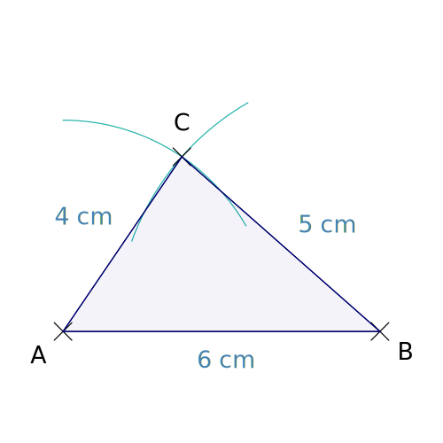
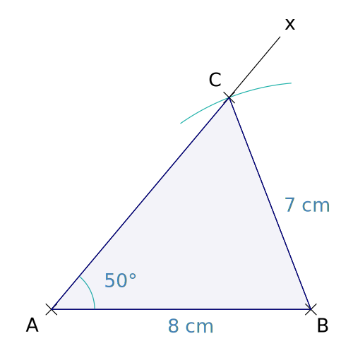
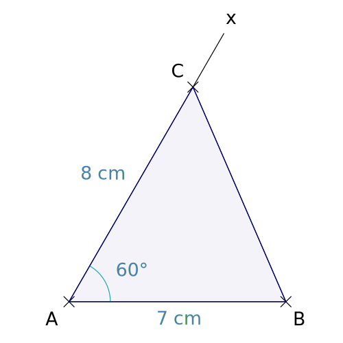
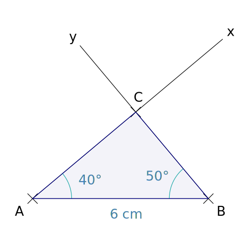

 Triangle connaissant trois côtés Construire un triangle connaissant les longueurs des trois côtés.
 Triangle : deux côtés et un angle Construire un triangle connaissant les longueurs de deux côtés et la mesure d'un angle.
 Triangle : deux côtés et un angle Construire un triangle connaissant les longueurs de deux côtés et la mesure de l'angle adjacent à ces côtés.
 Triangle : un côté et deux angles Construire un triangle connaissant la longueurs d'un côté et la mesure de deux angles adjacents à ce côté.